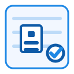
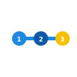
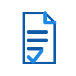
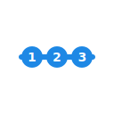
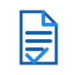
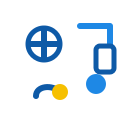

Contoh tombol hero: Pelajari Ketentuan
Resmi via SIMBG, OSS, & LPJK
Ketentuan & Persyaratan
Ringkasan PBG (izin bangun), SLF (kelayakan fungsi), serta SKK & SBU (kompetensi).
Ringkas
Persetujuan resmi sebelum membangun/merenovasi agar rencana bangunan sesuai ketentuan tata bangunan
(proses online via SIMBG).
Masa berlaku mengikuti ketentuan daerah/SIMBG. Perubahan rencana signifikan memerlukan
addendum/perubahan PBG.
Kapan Wajib
- Pendirian bangunan baru / penambahan lantai atau luas.
- Perubahan fungsi/tata ruang bangunan.
- Renovasi yang memengaruhi struktur/keandalan.
Dokumen Utama
- Data pemilik & lokasi; siteplan, gambar arsitektur/struktur/MEP.
- Spesifikasi teknis, perhitungan struktur (jika relevan), surat pernyataan perencana/penanggung jawab.
- Informasi zonasi & peruntukan (KDB/KLB/dll).
Alur Proses
Cek syarat &
konsultasi
Susun gambar & berkas
Submit & verifikasi SIMBG
Terbit PBG
Risiko tanpa PBG
- Penghentian pekerjaan / denda administratif.
- Potensi pembongkaran sebagian / ketidaktertiban legal.
Ringkas
Sertifikat setelah bangunan selesai yang menyatakan bangunan layak digunakan (aman &
memenuhi standar teknis), diproses via SIMBG.
Perlu perpanjangan berkala sesuai aturan pemerintah daerah.
Kapan Wajib
- Bangunan baru selesai dibangun atau pasca renovasi mayor.
- Perpanjangan berkala sesuai ketentuan.
Yang Dinilai
- Keandalan struktur, arsitektur, MEP, proteksi kebakaran, aksesibilitas, sanitasi & utilitas.
- Kesesuaian as-built dengan rencana disetujui.
Dokumen Utama
- Laporan pemeriksaan/survey & berita acara pengujian.
- As-built drawing, foto dokumentasi, bukti komisioning.
- Bukti kepemilikan/pemanfaatan lahan & dokumen PBG terkait.
Alur Proses
Survey & pemeriksaan
Pemenuhan rekomendasi
Submit & verifikasi
SIMBG
Terbit SLF
Risiko tanpa SLF
- Operasi tanpa legalitas fungsi (sanksi & hambatan utilitas).
Ringkas
SKK (individu) membuktikan kompetensi tenaga kerja. SBU (badan usaha) membuktikan klasifikasi
& kualifikasi perusahaan. Proses terhubung OSS/LPJK.
Kapan Wajib
- Mengikuti tender/pekerjaan konstruksi yang mensyaratkan kualifikasi.
- Penugasan profesional konstruksi (manajerial/teknis).
- Legalitas usaha jasa konstruksi.
Dokumen Utama
- SKK: Identitas & foto, pendidikan/pelatihan, pengalaman proyek, bukti kompetensi.
- SBU: Akta & NIB, pengurus, tenaga ber-SKK, portofolio, data peralatan (bila relevan).
Alur Proses
SKK: Verifikasi → Asesmen/Uji →
Sertifikat
SBU: Lengkapi OSS → Verifikasi LPJK →
SBU Terbit
Manfaat Inti
- Akses tender & peningkatan kredibilitas.
- Kepatuhan regulasi & peluang kerja sama.